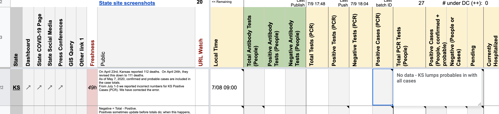
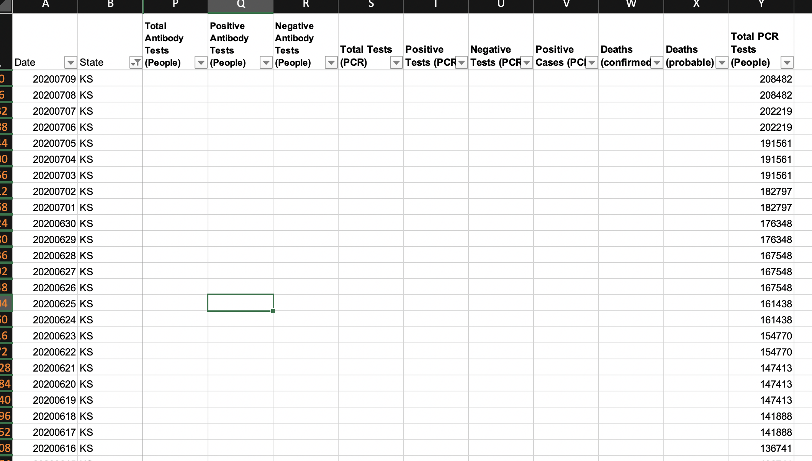
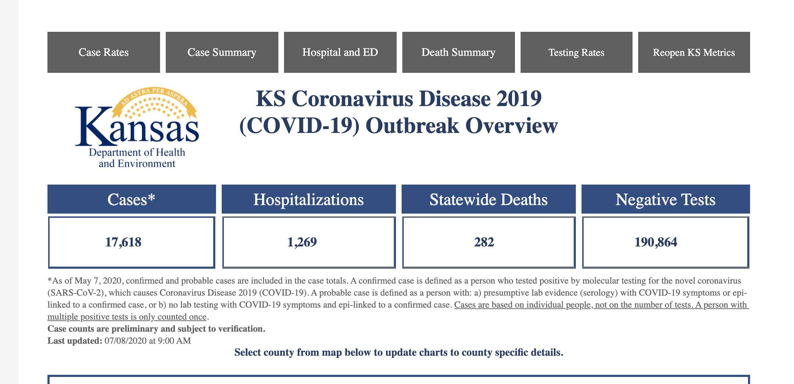
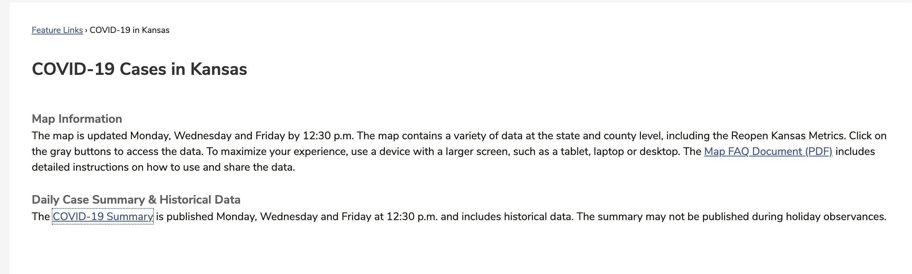
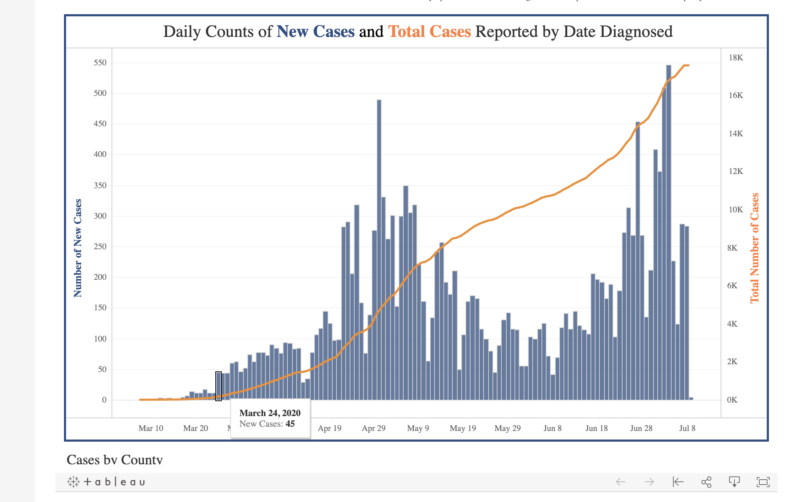
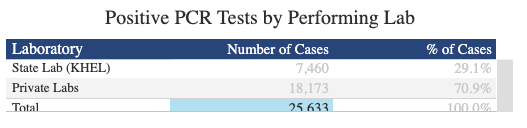

[KS] PCL Cases Historicals ***Awaiting Outreach Results***
Issue number 600
pscsharon opened this issue on July 10, 2020 at 8:23 am
Need to finalize decision on whether we can or cannot use KS’s historical case data for our Positive Cases (PCR) historicals. If yes, please backfill all days. We have not yet recorded any.
WS2: 
States Daily: 
KS Dashboard Comments: (Note that KS explicitly states they lump confirmed and probable in their case count.) 
KS Dashboard showing historical numbers: 
PRESS RELEASES: Strange. They just add the current day’s to the front and re-PDF the whole thing. This action leads me to think their historicals are not updated to be only confirmed… if they just keep adding today’s press release to prior days, but I am stretching - yes. https://www.coronavirus.kdheks.gov/DocumentCenter/View/1125/Historical---July-8?bidId=
We decided not to use the number from this graph as “Confirmed Cases”: 
Reasons:
- This number equals a number they call “positive tests” on their summary PDFs
- KS lumps antibody and antigen in its negatives, and neg+pos for these figures = totals, so we know at least the totals are lumped. KS calls the positives “PCR tests” but they could be sneaking in antigens under the header of “PCR” like FL and AK do
- These confirmed/probable numbers will be impossible for days before we started screenshotting this page
- There is another potential source of confirmed figures from summing a timeseries, but the timeseries (1) doesn’t confirm that it’s confirmed cases, and (2) is by date diagnosed rather than date reported, so would be on a different timeline from our lumped figures making inferring probables impossible from it
The historical hover-over graph is most-likely a lumped figure, so we can’t use it for backfill. We are waiting for confirmation from outreach.
The ‘COVID-19 Summary’ under ‘Daily Case Summary & Historical Data’ on the state page reports the number of positive tests, but these seem to be ‘specimens,’ rather than people. This is also inconclusive.
This problem is further complicated when considering that the ‘Negative Tests’ number is a lumped value (https://covid-tracking.slack.com/archives/C0124MP2E5C/p1592283152088300)
There is a separate number on the state page through the ‘Testing Rates’ button. In the ‘Positive PCR Tests by Performing Lab’ table, under ‘Number of Cases,’ we suspect that this number indicates lab-confirmed cases. We are waiting for confirmation from outreach on this and are working to take screenshots in order to have a record for potential back-filling.
***Note: On 7/27, this number and the ‘Positive test’ number in the historical PDF were the same.